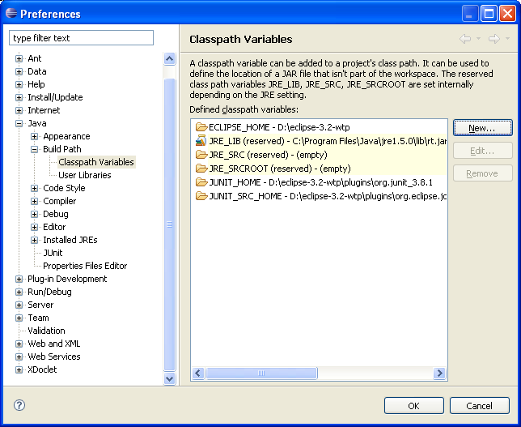
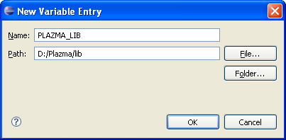
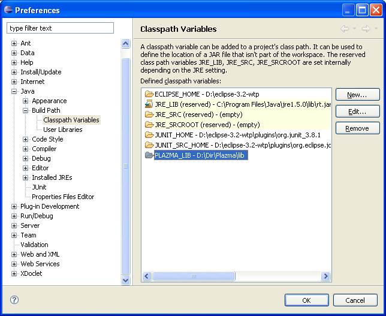

IMPORTANT! If you don't set variable PLAZMA_LIB or .jar files are not available you can have compilation error (ClassNotFound)
To create an variable you have to select menu Window -> Preferences...
Then select Java -> Build Path -> Classpath Variables in dialog Preferences
|  |
Next add new variable by press New...
|  |
Value Path is folder where locate files.
Next press OK
New variable is ready.
|  |